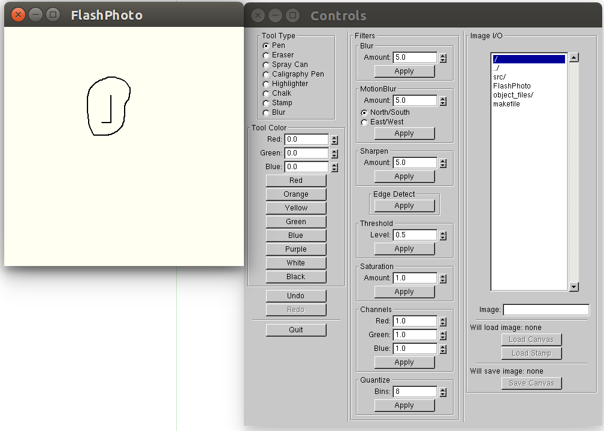

FlashPhoto is really a strong tool that allows you to both paint and perform different filters
on either a blank canvas or a loaded JPEG/PNG image. Below is a snapshot of FlashPhoto's two
seperate windows: one is a canvas for painting, the other is a control window for the tools
and filters.

This tutorial will introduce you to some of the features of FlashPhoto so that you can get started.
If you've never run FlashPhoto before, you will need to enter "make" into the terminal from the
FlashPhoto directory. To start the program, enter ./FlashPhoto into the terminal. Two windows will
pop up, a canvas and a control window.
Next, you can choose to load a background image that stored in your directory by using IMAGE I/O.
There are eight tools you can choose from the TOOL TYPE, they include a pen, an eraser, a spray
can, a calligraphy pen, a highlighter, a chalk, a stamp and a blur tool. If you want to use the
stamp, choose an image to load as the stamp, then click "Load Stamp" and select the stamp tool
from the panel to begin using it.
In the TOOL COLOR, choose from the preset colors or create your own. You can also pick different
amounts of the red, green and blue to change the background color.
One of the most powerful features of FlashPhoto is the 8 different image filters, blur, motion
blur, sharpen, edge detect, threshold, saturation, channels and quantize. Some of the filters
take in values to adjust the strength of the filter. Decide how much you would like and click
'Apply.'
If you make a mistake and need to undo your last action, you can just click the "Undo" button.
And if you want to restore what you just undid, click the "Redo" button.
Once you complete your painting, you can click the "Save Canvas" button and enter the name in
the "Image" field to save it as a JPEG/PNG image. Finally, click the "Quit" button to leave exit
FlashPhoto. All done!
Enjoy your painting experience using FlashPhoto!